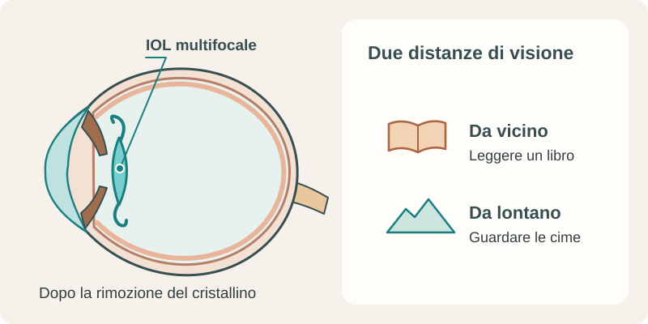

Mostra lo schemaNascondi lo schema


Come funziona una multifocale
Una IOL multifocale è un cristallino artificiale che ripartisce la luce fra più fuochi. Le trifocali mirano a coprire lontano, intermedio e vicino. La distanza di lettura più comoda varia secondo il modello e il risultato ottenuto.
Quando valutarla
Nel percorso per la cataratta può essere una possibilità per chi desidera usare meno gli occhiali in attività diverse. La scelta richiede una valutazione della superficie oculare, della cornea, della macula e del nervo ottico. Alcune condizioni possono ridurre il beneficio atteso.
Differenze tra lenti multifocali ed EDOF
Multifocali. Distribuiscono la luce su più fuochi. Le trifocali sono progettate per vedere da lontano, a distanza intermedia e da vicino. Aloni e abbagliamento intorno alle luci sono in genere più frequenti con le multifocali.
EDOF (a profondità di fuoco estesa). Estendono l’intervallo di messa a fuoco, soprattutto dal lontano alla distanza intermedia. Per leggere caratteri piccoli da vicino possono servire gli occhiali.
L’oculista valuta quale lente è più adatta in base alla visita e alle misurazioni dell’occhio.
Nella vita quotidiana
Domande frequenti
Posso scegliere la lente solo in base alle mie abitudini?
Le abitudini orientano la scelta. Le misurazioni e l’esame oculistico stabiliscono quali opzioni sono compatibili con la salute dei tuoi occhi.
E se ho anche astigmatismo?
Alcune lenti multifocali sono disponibili in versione torica. Il medico misura la cornea per valutare se questa correzione è indicata.